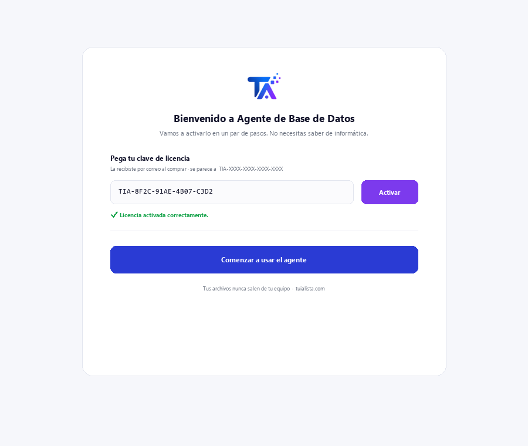
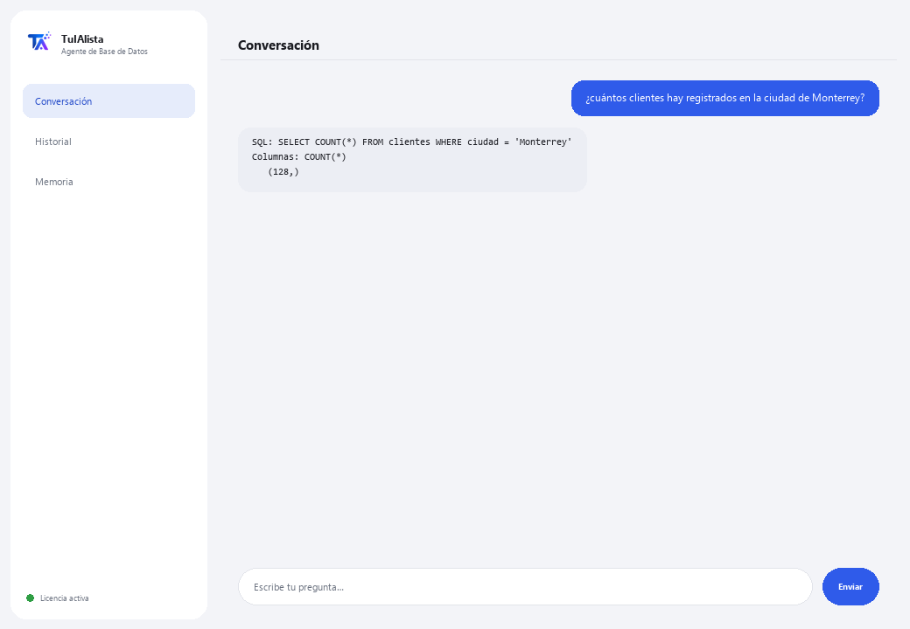

Agente de Base de Datos
Convierte tus preguntas en consultas a tu base de datos, sin que tengas que saber SQL. Solo lectura: nunca modifica ni daña tus datos.
¿Qué resuelve y qué necesitas?
En muchas empresas, los datos importantes viven en una base de datos, pero solo el área técnica sabe consultarlos. Cada vez que alguien necesita un número, tiene que pedirle a TI que escriba una consulta y esperar. Este agente traduce tu pregunta en español a una consulta SELECT y te muestra el resultado — sin riesgo de dañar nada.
- Necesitas: tu clave de licencia (TIA-XXXX-XXXX-XXXX-XXXX) y los datos de conexión a tu base (SQLite, PostgreSQL o MySQL). Configuración técnica — normalmente la hace tu área de TI.
- Primer resultado: instalas, activas tu licencia, configuras la conexión y preguntas directamente en lenguaje normal — no hay comandos que aprender.
- Tu base de datos nunca sale de tu infraestructura — la conexión y las consultas corren localmente.
soporte@tuialista.com o entra a tuialista.com/soporte — normalmente respondemos el mismo día hábil.1 Qué hace este agente
Tú le dices a qué base de datos conectarse y luego le preguntas en lenguaje normal:
- Traduce tu pregunta a una consulta SELECT (solo lectura) y la ejecuta.
- Te muestra la consulta SQL que generó y el resultado.
- Nunca ejecuta operaciones que modifiquen datos (INSERT, UPDATE, DELETE, DROP...): un validador de seguridad bloquea cualquier consulta que no sea de lectura.
- Funciona con SQLite, PostgreSQL y MySQL (SQLite viene listo; MySQL y PostgreSQL requieren instalar su extra).
El resultado: cualquier persona autorizada puede consultar los datos sin depender de que TI escriba la consulta, y sin riesgo de dañar nada.
2 Instalación
Para Windows. Este agente tiene un paso extra respecto a los agentes que leen carpetas: la conexión a tu base de datos se configura aparte.
Baja el instalador desde tuialista.com/descargar (agente Base de Datos) y ábrelo. Crea un acceso directo en tu escritorio con el logo — no requiere Python ni terminal.
Doble clic al ícono nuevo. Pega tu clave de licencia (te llegó por correo al comprar) y pulsa Activar. A diferencia de otros agentes, no te pide elegir una carpeta — este agente se conecta a una base de datos, no a archivos locales.
Define las variables de entorno TARGET_DB_TYPE (sqlite, postgres o mysql) y TARGET_DB_URL con los datos de tu base. Para SQLite solo necesitas la ruta al archivo .db. Este paso lo hace normalmente el área de TI.

3 Cómo usarlo
El agente abre una ventana de chat, como una app de mensajería — no es una pantalla negra de programador. No tiene comandos que memorizar: le escribes tu pregunta en lenguaje normal en el cuadro de texto de abajo, pulsas Enviar (o Enter), y el agente genera la consulta, la ejecuta y te muestra el SQL, las columnas y los resultados:

El agente le entrega a la IA el esquema de tus tablas (nombres de tablas y columnas) para construir la consulta correcta. Los datos solo se leen cuando la consulta SELECT se ejecuta, y se limita a un máximo de 100 filas por respuesta. Escribe salir (o exit) para terminar.
4 Ejemplos de uso común
Un conteo rápido
¿cuántos pedidos se hicieron el mes pasado?
Un total con filtro
¿cuánto sumaron las ventas de la región norte este año?
Un top
dame los 5 productos más vendidos por cantidad
Un cruce entre tablas
¿qué clientes no han hecho ningún pedido en los últimos 90 días? — el agente arma el SELECT con los JOIN necesarios según tu esquema y te muestra el resultado (hasta 100 filas).
5 Preguntas frecuentes
¿Puede dañar o borrar mis datos?
¿Qué bases de datos soporta?
¿Mis datos se suben a internet?
¿Necesito internet para usarlo?
¿Por qué me muestra el SQL que generó?
¿Cuántos resultados devuelve?
¿En qué idioma me responde?
¿Qué pasa si el agente genera un SQL incorrecto?
¿Puedo cambiar de base de datos?
¿Necesita un usuario especial de base de datos?
6 Solución de problemas
“Tipo de BD no soportado”
Error al conectar a MySQL o PostgreSQL
SQLite: “unable to open database file”
“Solo se permiten consultas de lectura (SELECT)”
Dice “Licencia no válida” o pide reconectar
“No hay proveedores de IA configurados”
¿Ninguna de estas soluciones resolvió tu problema? Escríbenos directamente — con gusto lo revisamos contigo.
soporte@tuialista.com o entra a tuialista.com/soporte — normalmente respondemos el mismo día hábil.7 Privacidad y confidencialidad
Tu base de datos y sus datos nunca salen de tu infraestructura.
- El agente se conecta a tu base de datos localmente (en tu equipo o tu red) y ejecuta las consultas ahí. Los resultados no se suben a ningún servidor.
- A la IA solo se le envía el esquema (nombres de tablas y columnas) y tu pregunta, para redactar la consulta SELECT. Los datos que devuelve la consulta no se transmiten al motor de IA.
- Lo único que viaja por internet es: (1) una comprobación de que tu licencia está activa, y (2) el esquema + tu pregunta para generar el SQL.